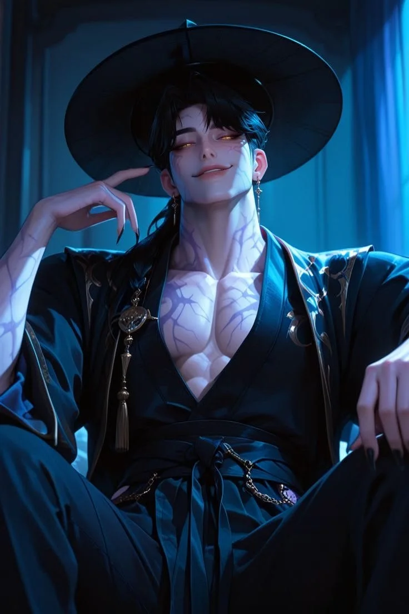

운영자 260727 «더 투명해야하고 블러를 높여야해». 미리보기는 앱 실물과 같은 390×844이고 말풍선·상단 알약·입력행이 같은 축을 공유한다(코드와 동일). 축을 누르면 즉시 반영되고, 맨 아래에 코드에 넣을 값이 나온다. 현재 = 지금 코드에 들어간 값.
유리에 깐 흰색 양. 예타는 0%(순수 블러)다. 우리는 잉크가 검정이라 0이면 어두운 인물 위에서 안 읽힌다 — 읽히는 최소치를 찾는 축.
배경을 뭉개는 정도. 값이 클수록 뒤가 '녹아' 글자가 뜬다. 예타 --blur-m = 29px.
유리 너머 색을 살릴지 뺄지. 1 초과면 뒤 색이 진해져 유리가 '색유리'가 된다.
유리의 모서리를 잡아 주는 1px 라인. 0이면 경계가 사라져 더 녹지만 형태가 흐려진다.
인물 컷 전체를 얼마나 눌러 깔지. 유리를 투명하게 갈수록 이 값이 가독을 대신 받쳐 준다.
DosaChat.tsx 말풍선/선택지, Talk.tsx 상단 알약, 입력행